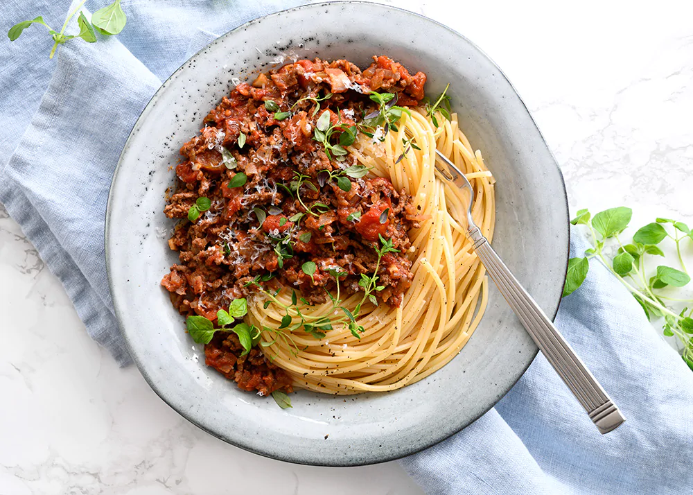

Spaghetti Bolognese

Description
Spaghetti Bolognese. Just like in that movie.. you know.. the one with the dogs? and the italian guys singing.. what was the name?
Ingredients
- 50 gr bacon
- 2 onion
- 2 garlic
- 500 gr minced meat
- 1 dl red wine
- 2 cans of crushed tomatoes
Steps
- Fry the bacon. When done, put it on a plate with some paper on it
- Add onion and garlic to the pot with the bacon grease in it and fry until the onion is soft and transparent
- Add the meat and "brown" it
- Add red wine and crushed tomatoes and let it simmer for as long as possible
- Boil some salt water.
- Add spaghetti and let it boil for 15 minutes